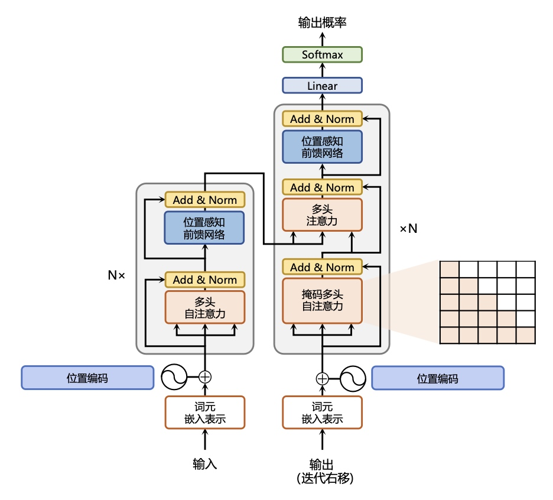
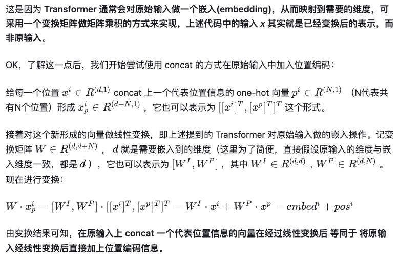
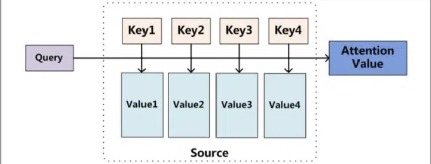
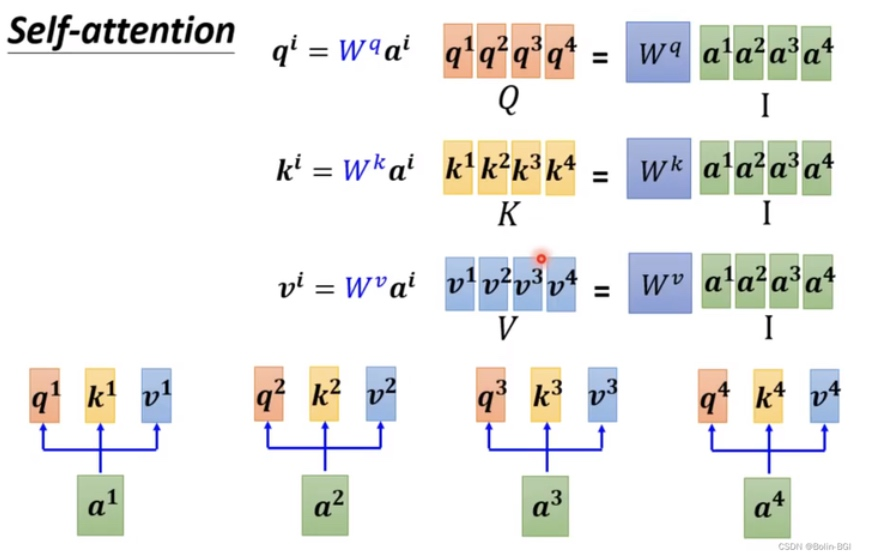
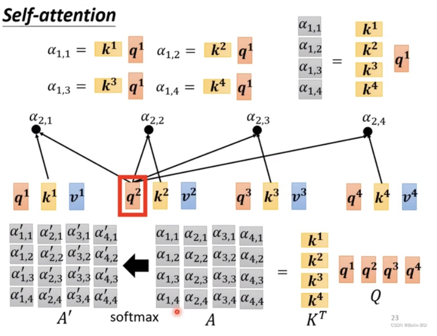
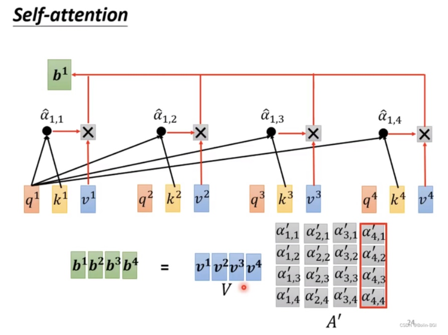
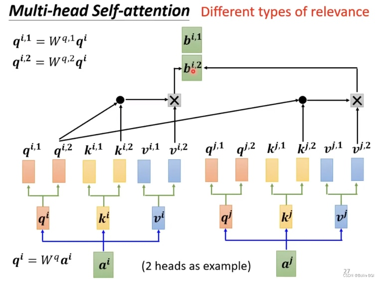
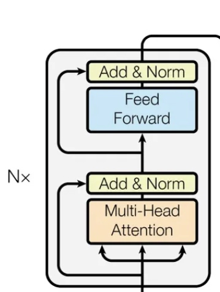
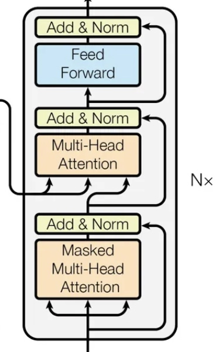

框架结构图
Encoder-Decoder 结构。

特点
框架实现细节
1. Embedding
1.1 Word Embedding
# word embedding
# input size: [seq_len, d_model]
# output size: [seq_len, d_model]
class WordEmbedding(nn.Module):
def __init__(self, d_model, vocab_size, pad_idx):
super().__init__()
self.lut = nn.Embedding(vocab_size, d_model, pad_idx)
self.d_model = d_model
def forward(self, x):
# 原因：由于对词向量进行 L2norm 时会将向量的值归一化，维度越大的向量归一化后单个值越小，乘以该权重后，
# 与位置编码相加时大家的 scale 都差不多
return self.lut(x) * self.d_model ** 0.5
1.2 Position Embedding
1.2.1 Why
Transformer 不再采用类似 RNN 或 LSTM 的基于循环的方式建模文本输入，序列中缺乏提示单词之间相对位置关系的信息
1.2.2 How
对每一个单词的位置构造一个向量，该向量会与 Word Embedding 对应相加，送入到后续模块中做进一步处理。
构建 PE 矩阵来表示，pos 代表单词所在位置 2i 和 2i+1 代表位置编码向量中的对应维度，d 代表 d_model。
\( \begin{align} PE(pos, 2i) = \sin {(\frac {pos} {10000^{2i/d}})} \\ PE(pos, 2i + 1) = \cos{(\frac {pos} {10000^{2i/d}})} \end{align}\)
选择正余弦函数的优势：
- 首先确保每个维度的位置编码不同；
- 范围在 [-1,1] 之间，与原词相加后不会使结果偏离过远，导致破坏原本单词的语义信息；
- 利用三角函数基本性质，可以得到任意两个位置中，某一个位置的编码是另一个位置编码的线性组合，即可以包含单词之间的距离信息。
代码实现
# position embedding，本质是求二元函数 PE(pos,i)在 [0<=pos<=seqlen-1],[0<=i<=d_model-1] 时的函数值构成的矩阵
# input size: [batch_size, seq_len, d_model]
# output size: [batch_size, seq_len, d_model]
class PositionalEncoding(nn.Module):
# max_seq_len：序列中有多少个词；d_model：每个词的向量的长度
def __init__(self, d_model, dropout, max_seq_len):
super().__init__() # 调用父类的 init 方法
self.dropout = nn.Dropout(p=dropout)
assert d_model % 2 == 0
pos_seq = torch.linspace(0, max_seq_len - 1, max_seq_len) # 生成 pos 的一维张量
i_seq = torch.linspace(0, d_model - 2, d_model // 2) # 生成 i 的一维张量
# meshgrid 生成网格：对于输入的 pos_seq 和 i_seq，将 pos_seq 里的值均当作横坐标，i_seq 里的值均当作纵坐标进行网格化
# 返回的 pos 和 i_2 分别是网格后横坐标的 tensor 和纵坐标的 tensor，维度均变为[max_seq_len, d_model]
pos, i_2 = torch.meshgrid(pos_seq, i_seq)
pe_2i = torch.sin(pos / 10000 ** (i_2 / d_model)) # 生成 PE(pos, 2i)
pe_2i_1 = torch.cos(pos / 10000 ** (i_2 / d_model)) # 生成 PE(pos, 2i+1)
pe = torch.stack((pe_2i, pe_2i_1), 2).reshape(1, max_seq_len, d_model)
self.register_buffer('pe', pe, False)
# 以 batch 为单位处理，x 的 size 为[batch_size, seq_len, d_model]，即将一个批次中所有词向量与其位置编码相加
def forward(self, x):
batch_size, seq_len, d_model = x.shape
pe: torch.Tensor = self.pe
x += pe[:, 0:seq_len, :]
return self.dropout(x)
为何是相加而不是 concat？

2. Attention
计算查询对象和被查询对象中每个信息的相关程度。

2.1 流程
\( \begin{align} Attention(Q,K,V) = Softmax(\frac {QK^T} {\sqrt {d}})V \end{align}\)
-
Query 与每一个 Key 计算相似性得到相似性评分 s；
-
将 s 评分进行 softmax 转换成 [0,1] 之间的概率分布 a；
-
将 [a1,a1,...,an] 作为权值矩阵对 Value 进行加权求和得到最后的 Attention 值。
trick: 除 \(\sqrt {d}\) 原因：假设 Q 和 K 均值为 0，方差为 1，则进行矩阵相乘后，\(S=Q*K^T\) 的均值为 0，方差为 d_model，当 d_model 较大时，S 中元素的方差也会很大，此时若经过 Softmax 层后，在数量级较大时，softmax 会将几乎全部的概率分布都分配给了最大值对应的标签，此时会导致在将来求梯度时，会产生梯度消失的情况。因此对 S 中元素均除 \(\sqrt {d}\) 后，其方差又变为 1，降低了梯度消失的可能性。
2.2 Self Attention
减少对外部信息的依赖，更擅长捕捉数据的内部相关性。
由输入单词 \(w_i\) 经过 Embedding 后，分别与三个可学习的权重矩阵 \(W^Q,W^K,W^V\) 相乘得到其中的一个 \(q_i,k_i,v_i\)；再将所有单词分别得到的 \(q_i,k_i,v_i\) 相拼接得到最终的 \(Q,K,V\)。
\(Q,K,V\) 的获得：

\(Q * K^T\) 的获得：

\(Attention\) 的获得：

2.3 Multi-head Attention
由于相关性有很多种不同的形式，一个 q 往往很难学习到所有层面上的相关性，因此需要有多组 QKV 进行学习。
2.3.1 过程：
上下文中每一个单词的表示 xi 经过多组线 \(W^Q_i, W^K_i, W^V_i\) 映射到不同的子空间中，最终将各个 \(Q_i、K_i、V_i\) 得到的 \(Attention_i\) 结果整合到一起，形成最终的 \(Attention\) 结果。

2.3.2 代码实现：
# 单头注意力机制，即计算 Multi-Attention(Q,K,V)
def attention(q, k, v, mask: Optional[torch.Tensor] = None):
# q shape:[batch_size, num_heads, q_len, d_k]
# k shape:[batch_size, num_heads, k_len, d_k]
# v shape:[batch_size, num_heads, k_len, d_v]
assert q.shape[-1] == k.shape[-1]
d_k = k.shape[-1]
# temp shape:[batch_size, num_heads, q_len, k_len]
temp = torch.matmul(q, k.transpose(-2, -1)) / d_k ** 0.5
if mask is not None:
temp.masked_fill_(mask, MY_INF) # 不能将 masked 的 value 设为 torch.inf，因为此时 softmax 会存在分母为 0 的情况
temp = F.softmax(temp, -1)
# output shape:[batch_size, num_heads, q_len, d_v]
output = torch.matmul(temp, v)
return output
# output size: [batch_size, seq_len, d_model]
class MultiHeadAttention(nn.Module):
def __init__(self, num_heads, d_model, dropout):
super().__init__()
assert d_model % num_heads == 0
self.d_model = d_model
self.heads = num_heads
self.d_k = d_model // num_heads # q,k,v 变换空间后向量维数
self.q = nn.Linear(d_model, d_model)
self.k = nn.Linear(d_model, d_model)
self.v = nn.Linear(d_model, d_model)
self.out = nn.Linear(d_model, d_model)
self.dropout = nn.Dropout(p=dropout)
def forward(self, q, k, v, mask:Optional[torch.Tensor]=None):
assert q.shape[0] == k.shape[0]
assert q.shape[0] == v.shape[0]
assert k.shape[1] == v.shape[1]
n, q_len = q.shape[0:2]
n, k_len = k.shape[0:2]
# q: [n, q_len, d_model]
# self.q(q): [n, q_len, d_model]
# after reshape: [n, q_len, self.heads, self.d_k]
# after transpose: [n, self.heads, q_len, self.d_k]
# 这里的 n 也即 batch_size，此时 q 可以输入进 attention，k 和 v 同理
q_ = self.q(q).reshape(n, q_len, self.heads, self.d_k).transpose(1, 2)
k_ = self.k(k).reshape(n, k_len, self.heads, self.d_k).transpose(1, 2)
v_ = self.v(v).reshape(n, k_len, self.heads, self.d_k).transpose(1, 2)
attn_res = attention(q_, k_, v_, mask)
# attn_res: [n, num_heads, q_len, d_v]
# after transpose: [n, q_len, num_heads, d_v]
# after reshape: [n, q_len, d_model]
concat_res = attn_res.transpose(1, 2).reshape(n, q_len, self.d_model)
concat_res = self.dropout(concat_res)
output = self.out(concat_res)
return output
2.3.3 改进：
3. FeedForward
本质是两层 mlp，先升维后降维。
3.1 公式
\( \begin{align} FFN(x) = Relu(xW_1+b_1)W_2 + b_2 \end{align}\)
3.2 代码实现
class FeedForward(nn.Module):
def __init__(self, d_model, d_ff, dropout):
super().__init__()
self.layer1 = nn.Linear(d_model, d_ff)
self.dropout = nn.Dropout(p=dropout)
self.layer2 = nn.Linear(d_ff, d_model)
def forward(self, x):
x = self.layer1(x)
x = self.dropout(F.relu(x))
x = self.layer2(x)
return x
4. Add & Norm
4.1 Residual Addation
目的：使网络效果起码比没有时要好，也避免网络过深可能导致的梯度消失。
\( \begin{align} x^{l + 1} = f(x^l) + x^l \end{align}\)
4.2 Normalization
目的：将数据平移缩放到均值为 0，方差为 1 的标准分布，可以缓解优化过程中的不稳定、数据收敛慢的问题。
\( \begin{align} LN(x) = \alpha · \frac {x - \mu} {\sigma} + b \end{align}\)
Batch Norm：
- 对一个 batch_size 内，所有样本的某一个特征做标准化，保留了不同样本的某一特征之间的可比性；
- 适用于 CV，因为同一图像的不同特征之间关系较小，而不同图像的同一特征之间关系较大。
Layer Norm：
- 对一个 batch_size 内，某一样本的所有特征做标准化，保留了同一样本的不同特征之间的可比性；
- 适用于 NLP，因为一句话中，某个词和上下文关系很大，而和别的句子中同一个词的关系较小。
5. Encoder
5.1 Goal
实现高级语义特征的提取。

5.2 Code
class EncoderLayer(nn.Module):
def __init__(self, num_heads, d_model, d_ff, dropout):
super().__init__()
self.self_attn = MultiHeadAttention(num_heads, d_model, dropout)
self.ffn = FeedForward(d_model, d_ff, dropout)
self.norm1 = nn.LayerNorm(d_model)
self.norm2 = nn.LayerNorm(d_model)
self.dropout1 = nn.Dropout(dropout)
self.dropout2 = nn.Dropout(dropout)
def forward(self, x, ec_mask:Optional[torch.Tensor]=None):
# construct-1
temp1 = self.self_attn(x, x, x, ec_mask)
temp1 = self.dropout1(temp1)
x = self.norm1(x + temp1)
# construct-2
temp2 = self.ffn(x)
temp2 = self.dropout2(temp2)
x = self.norm2(x + temp2)
return x
class Encoder(nn.Module):
def __init__(self, vocab_size, pad_idx, d_model, d_ff, n_layers, num_heads, dropout, max_seq_len):
super().__init__()
self.we = WordEmbedding(d_model, vocab_size, pad_idx)
self.pe = PositionalEncoding(d_model, dropout, max_seq_len)
self.layers = []
for i in range(n_layers):
self.layers.append(EncoderLayer(num_heads, d_model, d_ff, dropout))
self.layers = nn.ModuleList(self.layers)
def forward(self, x, ec_mask:Optional[torch.Tensor]=None):
x = self.we(x)
x = self.pe(x)
for layer in self.layers:
x = layer(x, ec_mask)
return x
6. Decoder
6.1 Goal
根据编码器的信息，推断对应的文本。

相比于 encoder，多了一个和 encoder 输出之间的交叉注意力机制。在该机制中，query 是 decoder 前一层输出的投影，key 和 value 是 encoder 的输出进行的投影。
作用：允许模型在生成输出序列时，将注意力集中在输入序列中的相关部分。
6.2 Code
class DecoderLayer(nn.Module):
def __init__(self, num_heads, d_model, d_ff, dropout):
super().__init__()
self.self_attn = MultiHeadAttention(num_heads, d_model, dropout)
self.cross_attn = MultiHeadAttention(num_heads, d_model, dropout)
self.ffn = FeedForward(d_model, d_ff, dropout)
self.norm1 = nn.LayerNorm(d_model)
self.norm2 = nn.LayerNorm(d_model)
self.norm3 = nn.LayerNorm(d_model)
self.dropout1 = nn.Dropout(dropout)
self.dropout2 = nn.Dropout(dropout)
self.dropout3 = nn.Dropout(dropout)
def forward(self, x, encoder_kv, dc_mask:Optional[torch.Tensor]=None, ec_dc_mask:Optional[torch.Tensor]=None):
# construct-1
temp1 = self.self_attn(x, x, x, dc_mask)
temp1 = self.dropout1(temp1)
x = self.norm1(x + temp1)
# construct-2
temp2 = self.self_attn(x, encoder_kv, encoder_kv, ec_dc_mask)
temp2 = self.dropout2(temp2)
x = self.norm2(x + temp2)
# construct-3
temp3 = self.ffn(x)
temp3 = self.dropout3(temp3)
x = self.norm3(x + temp3)
return x
class Decoder(nn.Module):
def __init__(self, vocab_size, pad_idx, d_model, d_ff, n_layers, num_heads, dropout, max_seq_len):
super().__init__()
self.we = WordEmbedding(d_model, vocab_size, pad_idx)
self.pe = PositionalEncoding(d_model, dropout, max_seq_len)
self.layers = []
for i in range(n_layers):
self.layers.append(DecoderLayer(num_heads, d_model, d_ff, dropout))
self.layers = nn.Sequential(*self.layers)
def forward(self, x, encoder_kv, dc_mask:Optional[torch.Tensor]=None, ec_dc_mask:Optional[torch.Tensor]=None):
x = self.we(x)
x = self.pe(x)
for layer in self.layers:
x = layer(x, encoder_kv, dc_mask, ec_dc_mask)
return x
7 Mask
7.1 encoder 中 self-attention 的 mask
需要将同一个 batch 中所有的样本都 padding 到最长长度，同时使 attention 结果不受 padding 的影响。
将 K 为 padding 时对应的 attention 权重设为 0，并在计算交叉熵损失的过程中设置 ignore_idx 将这部分的 loss 去掉。
在得到 Q 和 K 的内积结果后，将 mask 的部分设置为一个很小的数，保证 softmax 后该部分的值趋于 0，影响最小。
7.2 decoder 中 self-attention 的 casual mask
decoder 需要不断地通过自回归预测下一个生成的单词，因此仅有当前单词之前的目标语言序列是可以被观测的，添加该 mask 是为了掩盖后续的文本信息。
7.3 decoder 中 cross-attention 的 mask
对于不应该计算注意力的位置进行 mask。
8 Transformer
class Transformer(nn.Module):
def __init__(self, src_vocab_size, dst_vocab_size, pad_idx, d_model, d_ff, n_layers, num_heads, dropout, max_seq_len):
super().__init__()
self.encoder = Encoder(src_vocab_size, pad_idx, d_model, d_ff, n_layers, num_heads, dropout, max_seq_len)
self.decoder = Decoder(dst_vocab_size, pad_idx, d_model, d_ff, n_layers, num_heads, dropout, max_seq_len)
self.pad_idx = pad_idx
self.output_layer = nn.Linear(d_model, dst_vocab_size)
def generate_mask(self, q_pad, k_pad, with_left_mask=False):
# q_pad's shape:[batch_size, q_len], k_pad's shape:[batch-size, k_len]
assert q_pad.device == k_pad.device
batch_size, q_len = q_pad.shape
batch_size, k_len = k_pad.shape
# mask's shape should be equal to the tensor's shape which before softmax in attention[batch_size, num_heads, q_len, k_len]
mask_shape = [batch_size, 1, q_len, k_len]
# 若并非解码器的 mask，就初始化为全 0 张量；否则为上三角为 0，其余为 1 的张量
if with_left_mask:
mask = 1 - torch.tril(torch.ones(mask_shape))
else:
mask = torch.zeros(mask_shape)
mask = mask.to(q_pad.device)
for i in range(batch_size):
mask[i, :, q_pad[i], :] = 1
mask[i, :, :, k_pad[i]] = 1
mask = mask.to(torch.bool)
return mask
def forward(self, x, y):
# 若张量 x 中的元素等于 pad_idx，则将 ec_pad_mask 中的对应元素的值设置为 True，否则为 False
ec_pad_mask = x == self.pad_idx
dc_pad_mask = y == self.pad_idx
ec_mask = self.generate_mask(ec_pad_mask, ec_pad_mask, False)
dc_mask = self.generate_mask(dc_pad_mask, dc_pad_mask, True)
ec_dc_mask = self.generate_mask(dc_pad_mask, ec_pad_mask, False)
encoder_kv = self.encoder(x, ec_mask)
res = self.decoder(y, encoder_kv, dc_mask, ec_dc_mask)
res = self.output_layer(res)
return res